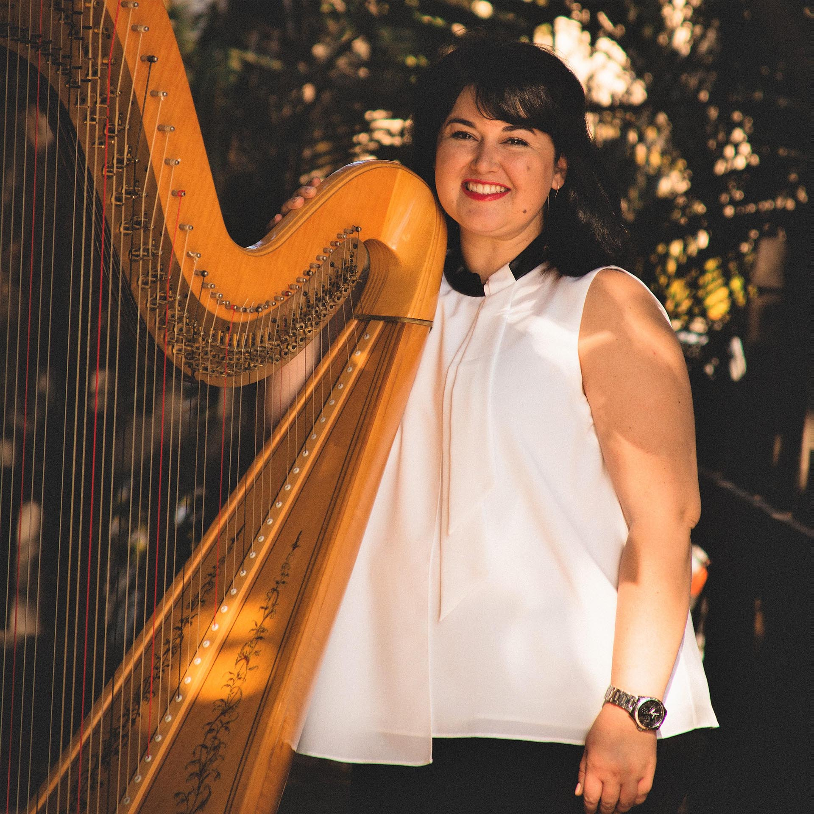

Bio
-
Early Days
Maryruth Culver started her musical career as an accompanist and cantor for St. Stephen’s Catholic Church in Valley Center, California at the young age of 11. This was just the beginning of Maryruth’s career as a musician and vocalist performing extensively throughout San Diego County. The San Diego Union Tribune and KUSI News recognized her as one of San Diego’s up-and-coming young artists.
-
Education
Maryruth studied music at the University of Arizona. In particular, she studied Harp under Dr. Carrol McLaughlin and graduated Magna Cum Laude in 2009 with a Bachelor of Arts degree in Harp Performance. In addition to studying harp, Maryruth also studied classical voice under Dr. Tony Antista and Meray Boustani, as well as piano under Dr. Lisa Zdechlik and jazz under Jeff Haskell.
-

Experience
For four years Maryruth toured extensively with the world-renowned harp ensemble known as “HarpFusion” and was often featured as a composer, arranger, and vocalist with the group. Some of her international tours with “HarpFusion” include the countries of Mexico, Belgium, Holland, Lichtenstein, Austria, Switzerland and Brazil. She also gave a solo recital in 2009 in Rio de Janeiro for the IV Annual Rio Harp Festival. Her commercial work has included regular performances for the Ventana Resort in Tucson, Arizona, the Westgate Hotel in San Diego, and Nordstrom at the Westfield Mall in North County San Diego.
-

Performances
Maryruth also performed with various recording artists in the contemporary Christian music genre including Matt Maher, Tom Booth, Jackie Francois and Tatiana Cameron. She is an accomplished orchestral performer and has been featured with various ensembles including the University of Arizona Symphony and Philharmonic Orchestras and the United States Marine Band.
-
Instruction
Maryruth has had the opportunity to teach music to various age groups both in private and group settings. She instructed the intermediate group of jazz harp students at the 2007 Harpe Diem Music Festival (Belgium) and has been an assistant teacher for the “Arizona Harp Experience” summer camp for over four years. She has also served as Musical Director for the Patio Playhouse Youth Theatre and as Director of Student Music for the St. Thomas Moore Catholic Newman Center.
-
Today
Maryruth currently resides in North County San Diego
where she continues to perform and teach in addition to working as Choral Director
for St. Gabriel's Catholic Church in Poway, California.